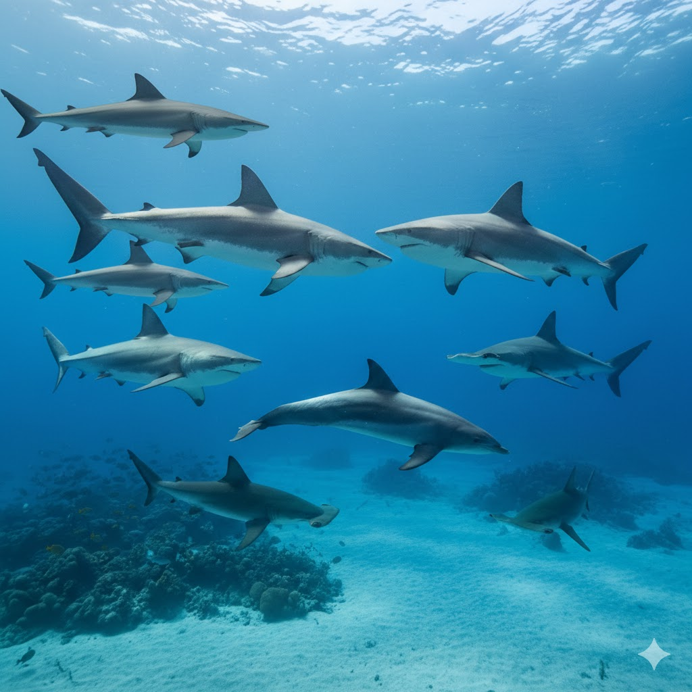

Tubarões e Golfinho

Composição da Imagem
Esta é uma imagem subaquática curiosa e um tanto "tensa" que mostra um grupo de tubarões rodeando um único golfinho.
O nome do arquivo, "golfinho.jpg", é bem apropriado, já que ele é o protagonista improvável da cena.
Aqui estão os detalhes principais:
- O "Intruso": No centro da imagem, vemos um golfinho nadando horizontalmente. Ele se destaca por sua pele mais lisa
e cinza-azulada e pela barbatana dorsal curva, característica dos mamíferos marinhos.
- O Grupo de Tubarões: Há pelo menos 8 tubarões visíveis ao redor do golfinho. Eles parecem ser de espécies
diferentes, incluindo alguns que lembram o tubarão-galha-preta e outros com a cabeça chata, típicos tubarões-martelo
(visíveis na parte inferior e à direita).
- O Cenário: O ambiente é um fundo oceânico claro e arenoso com alguns recifes de coral espalhados. A água é de um
azul cristalino, com raios de sol penetrando da superfície no topo da imagem.